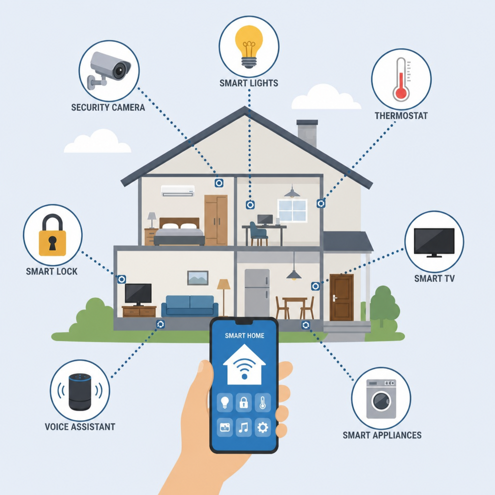
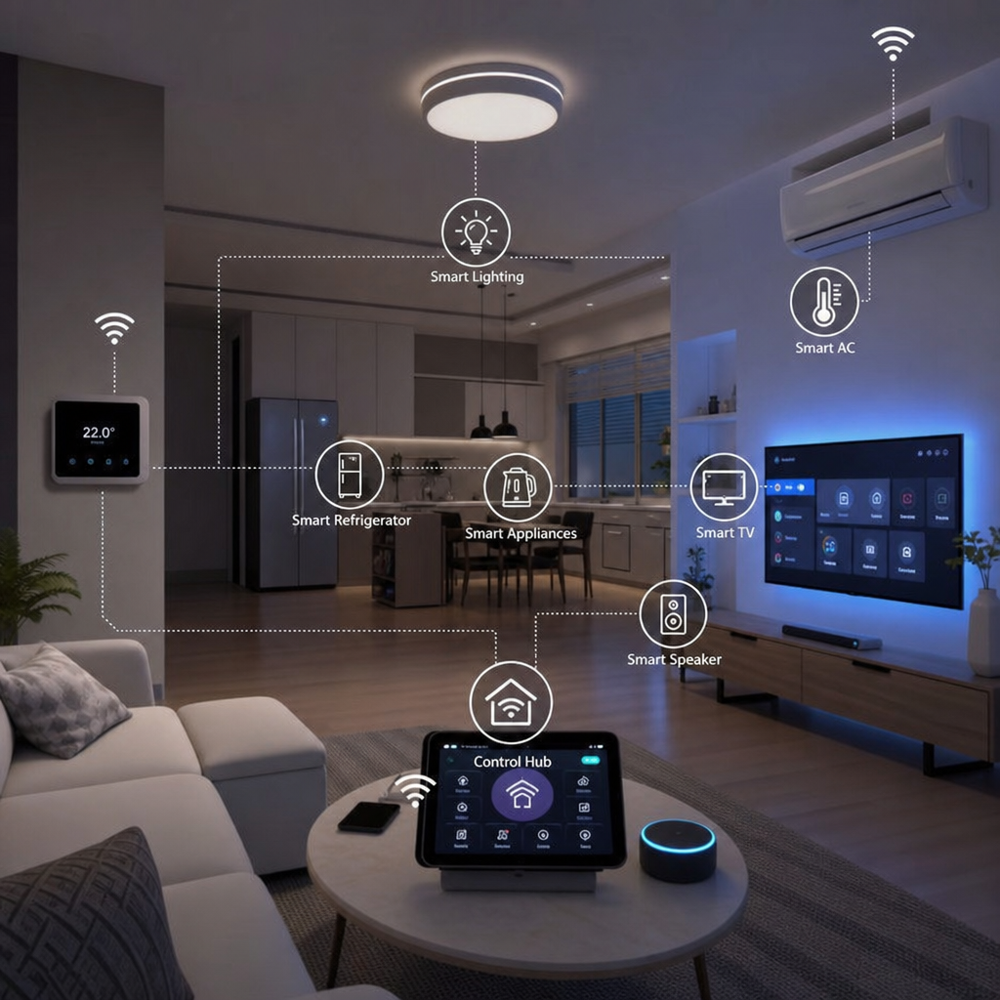

Smart homes are evolving quickly, and Matter is at the centre of that change. The standard is designed to make the connected devices in your home work together more easily, even when they come from different brands.
Matter 1.0 launched in October 2022, backed by more than 200 companies including Apple, Google, Amazon, and Samsung, under the Connectivity Standards Alliance. The standard has been updated roughly twice a year since, and is currently on version 1.4. As Wired has covered, the goal is simple: buy any Matter-certified device and use it with whichever voice assistant or app you already prefer, rather than being locked into one ecosystem. It supports devices across lighting, climate, security, and everyday routines, with a focus on simpler setup, stronger security, and dependable communication.
What is Matter? The new standard for smart homes
Matter is a smart-home standard developed by the Connectivity Standards Alliance. Instead of forcing every device into a separate ecosystem, it gives compatible products a shared language so they can communicate across platforms and manufacturers.
Matter runs over Wi-Fi, Ethernet, and Thread (a low-power mesh network built for smart-home devices). Devices join a shared local network called a "fabric," and can belong to more than one ecosystem at once — so a light can be controlled from Apple Home and Google Home simultaneously, without needing two separate setups. It also supports popular voice assistants, making it easier to control a home in the way that feels most natural to you.
- Interoperability: devices from different brands can work together.
- Security: protected communication and a stronger focus on privacy.
- Simplicity: a more straightforward setup and day-to-day experience.
Its open approach gives manufacturers and developers a common foundation to build on. For homeowners, the important part is less about the protocol itself and more about the freedom to choose devices based on what they do, not just which app they belong to.
Why Matter matters: key benefits and innovations
The biggest promise of Matter is a less fragmented smart home. A home can include a thermostat from one brand, lights from another, and a speaker or voice assistant from a third without making every decision around a single closed ecosystem.
Security is central to the standard's design. Matter uses encrypted communication to help protect device data, while its certification process gives shoppers a clearer signal that a product is designed to work reliably with other compatible gear.
There is also a practical benefit: setup should take less time. Rather than spending an afternoon adding every gadget to another app and troubleshooting handoffs, a Matter-enabled device is intended to join your home more directly.


Good smart-home technology should disappear into the routine—not create another routine to manage.
Latest Matter news and announcements
Matter-compatible products are steadily appearing in more categories. Lighting, plugs, sensors, locks, and thermostats were early areas of focus, while support is expanding into kitchen appliances and more advanced home-security equipment.
Recent progress has also centred on cross-platform control: the ability to choose the ecosystem you prefer while keeping devices available to the rest of the household. At the same time, manufacturers are exploring ways to use connected devices more efficiently, helping homes reduce unnecessary energy use through better schedules and automation.
How Matter is shaping the future of living
A useful smart home adapts to the people in it. Matter helps make that possible by allowing devices to respond together: lights can ease into the morning, heating can adjust around the household's rhythm, and security devices can share the information that matters.
That interoperability can lead to more comfortable, efficient homes. Automations become easier to build around real moments instead of around individual products, and you can make choices that save energy without sacrificing convenience.
- More personal spaces: routines can reflect the way your household actually lives.
- Lower energy use: lighting and climate can respond to occupancy and schedules.
- More accessible technology: voice, app, and physical controls can work together.
Home automation ideas with Matter
Matter is most useful when it solves a small, real problem. Start with moments you repeat every day rather than trying to automate everything at once.
A gentler wake-up
Set lights to brighten gradually before your alarm, then have the kitchen or living room ready for the start of the day.
A calmer kitchen
Coordinate appliances, lighting, and reminders around your morning or evening routine without juggling separate controls.
Security that works together
Let a lock, doorbell, lights, and alerts respond as one reassuring system when you leave or return home.
DIY home automation: getting started with Matter

Start small. Choose one Matter-compatible device that solves an immediate need—often a light, plug, sensor, or thermostat—and check that it works with the controller or smart-home platform your household uses.
If you want to expand, a Matter-capable hub or controller can act as the central point that helps devices communicate. From there, simple projects such as lighting schedules, voice-controlled climate adjustments, or arrival-and-leaving routines are a sensible next step.
Look for the Matter mark when shopping, but still consider the basics: does the device work well on its own, will everyone in the house be able to use it, and is the automation useful enough to maintain? The best setup is one you barely have to think about.
Want the full walkthrough — choosing a platform, setting up a Thread Border Router, and scanning a device's pairing code? matter-smarthome.de has a detailed step-by-step guide that goes deeper into the actual setup process than we do here.
A common snag: Matter-over-Thread devices need a Thread border router to join your network — often built into newer smart speakers or hubs (like a recent Apple TV, HomePod mini, or Google Nest Hub). If a device won't show up during setup, that's usually the first thing worth checking before assuming it's broken.
Matter, design, and the road ahead
Smart-home technology works best when it complements a home rather than competing with it. Matter makes it easier to choose devices that fit the way a space looks and feels, from discreet sensors to customizable lighting scenes that create the right atmosphere without adding visual clutter.
Matter is still expanding into new device categories, with updates roughly twice a year adding support for things like energy management and more advanced sensors. For anyone buying smart home devices today, the practical takeaway is simple: look for the Matter mark, and you'll spend less time worrying about compatibility later.